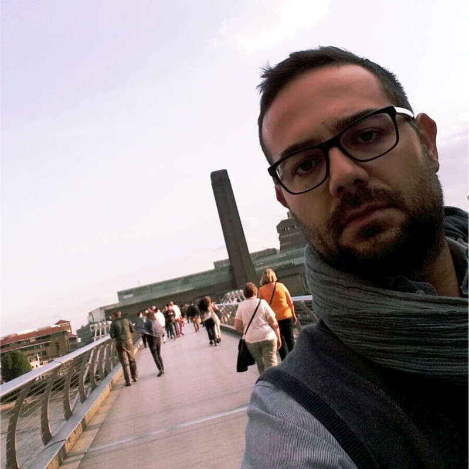
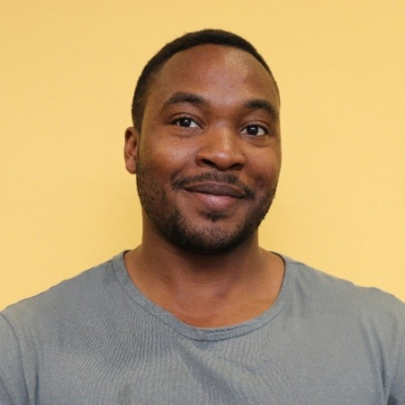
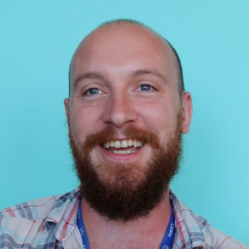

About
IT and data enthusiast with competences in Machine learning, full-stack Python development, system administration, and cloud architecture. BI consultant for Capgemini involved in an international project to analyse customers demand and forecast within the Agile framework. Previously IT project manager, focused on research activities within the scopes of robotics, artificial intelligence, big data, energy saving, and IoT domains, and data scientist for well-known companies involved in the development of machine learning algorithms and AI solutions applied to public administration and defence. Briefly Postdoctoral Research Fellow in Data Science at University of Sussex on deception detection, and Junior Data Scientist in collaboration with Deckchair.com working on computer vision. PhD in Experimental Particle Physics at University of Sussex/CERN and former member of the ATLAS Experiment at the LHC with extensive experience in data analysis.
In 2018 I graduated as a PhD in Experimental Particle Physics at the University of Sussex where I developed skills such as, problem solving, time management, coding (Python, C++, HTML, bash), and to carry out data analyses of high rates and volumes of data collected by the ATLAS Experiment at the Large Hadron Collider (CERN, Geneva). During my PhD I have been invited to give talks at national (UK), and international (US), conferences; I have also participated in outreach activities to engage with the general public.

Business Intelligence Consultant
- Birthday: 26 January 1987
- Phone: +39 333 60 66 844
- City: Catania, Italy
- Degree: PhD in Physics
Resume
Download CVEducation
PhD in Physics
2015 - 2018
University of SussexBrighton, UK
“Optimisation studies and data-driven background estimation in searches for the supersymmetric partner of the top quark with the ATLAS Detector at the LHC”. 2018. http://cds.cern.ch/record/2650559
MSC in Physics
2009 - 2014
Università di CataniaCatania, Italy
“Emissione di protoni e caratterizzazione spazio-temporale in collisioni tra ioni pesanti”.
BSc in Physics
2015 - 2009
Università di CataniaCatania, Italy
“Spettri di neutroni in sorgenti standard Am/Be e Pu/Be”.
Professional Experience
Business Intelligence Consultant
Capgemini Catania, Italy
2020
- Business intelligence consultant for Capgemini involved in an international project to analyse customers demand and forecast within the Agile framework by employing Microsoft Azure: MS SQL Server, Data Factory, Data Warehouse, Data Lake, Analysis Services, PowerBI
ICT Specialist & Robotics
R2M Solution s.r.l. Catania, Italy
2020
- Strongly delivery-oriented PM for:
- the development of a custom open-source ERP: full-stack development; cloud architecture (Azure, AWS, Heroku, GCloud)
- human-robot social-interaction research project;
- System administration of internal and customers products;
- IT solutions management, and support;
Data Scientist
Leonardo Company Catania, Italy
2019 - 2020
- Data crawling: development of a Python tool to scrape LinkedIn jobs and user profiles;
- Recommendation engine: development of a job-user recommendation system;
- Computer Vision: development of a WebApp to perform real-time object detection using YOLO;
- NLP: development of a deep-learning tool to extract the objects seized to criminal organizations from legal verdicts;
- Social-network Analysis: named-entity extraction and sentiment analysis on Facebook-post comments;
- Web application development and deployment as a support to the developed data-science models: Python (Flask, Django), HTML5, CSS, JS Dev Ops & cloud: Docker, Azure, gunicorn, NGINX;
Post-doctoral Research Fellow
University of Sussex Brighton, UK
2018 (4 months)
- Development of ML model to classify videos of trials as Truthful/Deceptive;
- Exploration of potential collaboration with other areas of research
Jr. Data Scientist
Deckchair.com Brighton, UK
2018 (3 months)
- Development of a statistical tool to select interesting images within a dataset;
- Design of a ML tool to classify grey sky and sunset images
Skills
Operating Systems
Programming Languages
Dev Ops, Versioning & cloud
Languages
Projects
Public Speaking
Discnet Showcase
“FROM PARTICLE PHYSICS TO COMPUTER VISION”
10-min talk on the ML tool developed for Deckchair.com
HLT-UK
“HLT TRACKING PERFORMANCE”
15-min talk: Presented the result of the performance of the tracking of the ATLAS Inner
detector
Phenomenology 2017
International Conference on High Energy Physics (ICHEP) 2016
Outreach
#ScienceonBuses
Participated in filming and engaged people on buses about CERN research activities
HiSPARC
Helped middle school student build a scintillator for cosmic-ray detection
CERN Master class
Talked to a high-school students audience about “The life of a PhD student at CERN”
Brighton Science Festival
Engaged kids through games related to particle physics
Awards
STFC Impact Acceleration Account
Post-doctoral Fellowship
DISCnet
3-month Grant
University of Sussex
Doctoral Overseas Conference Grant for Postgraduate Researchers
University of Sussex
PhD scholarship in collaboration with CERN
INFN | National Institute for Nuclear Physics
1-year MSc scholarship
Publications
International peer-reviewed conferences/proceedings
-
F. Miano for the ATLAS Collaboration.
“The design and performance of the ATLAS Inner Detector trigger for Run 2 LHC collisions at √s = 13 TeV”. In: Proceedings, 38th International Conference on High Energy Physics (ICHEP 2016): Chicago, IL, USA, August 3-10, 2016.
PhD Thesis
-
Fabrizio Miano and Fabrizio Salvatore.
“Optimisation studies and data-driven background estimation in searches for the supersymmetric partner of the top quark with the ATLAS Detector at the LHC”. Presented 28 Sep 2018. Sept. 2018. http://cds.cern.ch/record/2650559
Articles in peer-reviewed journals
-
The ATLAS Collaboration.
“Performance of the ATLAS trigger system in 2015”. In: The European Physical Journal C 77.5 (May 2017), p. 317. ISSN: 1434-6052. DOI: 10.1140/epjc/s10052-017-4852-3. https://doi.org/10.1140/epjc/s10052-017-4852-3. -
The ATLAS Collaboration.
“Search for a scalar partner of the top quark in the jets plus missing transverse momentum final state at √s=13 TeV with the ATLAS detector”. In: JHEP 12 (2017), p. 085. DOI: 10.1007/JHEP12(2017)085. arXiv: 1709.04183 [hep-ex] https://doi.org/10.1007/JHEP12(2017)085 -
The ATLAS Collaboration.
“Search for dark matter produced in association with bottom or top quarks in s = 13 TeV pp collisions with the ATLAS detector”. In: The European Physical Journal C ICHEP2016 (2016), p. 856. eprint: 1710.11412. https://doi.org/10.1140/epjc/s10052-017-5486-1. -
The ATLAS Collaboration.
“Search for the Supersymmetric Partner of the Top Quark in the Jets+ETmiss Final State at √s = 13 TeV”. In: CERN Document Server (2016).
Recommendations
Former colleagues who kindly wrote a recommendation on my LinkedIn profile
I have worked with Fabrizio for nearly one year at Leonardo Company as a member of the data science team. During this period, I could appreciate his strong knowledge in the data science, machine learning engineering, and micro services fields. He is a great team member, a natural leader, and a humble employee with a great attitude, always willing to help his colleagues. Fabrizio is also a brilliant researcher. He has provided a key contribution to bring innovation in the development of new products, continuously making sure that he keeps up with the latest researches by regularly attending conferences and training courses. I sincerely hope that we will have the opportunity to work together again in the future.
Giovanni Lima
Data Scientist
Fabrizio is an outstanding scientist. I had the pleasure of working alongside him during our PhDs on the ATLAS Experiment at CERN and also as post-doctoral researchers in data science with University of Sussex and Deckchair. He has an exceptional attention to detail and goes above and beyond to understand or help others understand difficult concepts. He has a broad scope of knowledge ranging from medical physics, medicine, experimental particle physics, data science and statistics. I am particularly impressed by his creative flair and project building talents. He frequently is testing new advancements in machine learning and building applications. He is a very confident presenter and carries a jovial, friendly manner that can capture everyone around him. I would definitely work with Fabrizio again and would recommend him for advanced scientific roles.
Yusufu Shehu
Research Scientist
I spent three years working with Fab while we were both PhD researchers at CERN and Sussex. He is a great scientist with solid technical skills, always contributing to the team conversation and bringing new insights. He knows the importance of technology and is always aware of the latest industry standard tools and techniques. I have benefited a lot from his experience during our time working together. He also has a great personality: approachable and fun with a great sense of humour; a massive presence in the team
Samuel Jones
Doctoral Researcher in Experimental Particle Physics
Fabrizio is an enthusiastic physicist and data scientist, with whom I shared my experience as a PhD student in experimental particle physics at the University of Sussex and at CERN. He approaches his work with a curious attitude and with critical thought, essential qualities to carry out scientific research and data analysis tasks. During his PhD he was often raising non-trivial questions about the ongoing research projects in our group, contributing to develop interesting discussions and exchanges within the team. In addition to this, he has a natural inclination to create a positive environment around him, making him an excellent team builder and a friendly and enjoyable presence in the office.
Giuseppe Lerner
Physicist - CERN Fellow
I met Fabrizio when I began to work for Leonardo company in 2019, shortly after my graduation. He mentored me in the Data Science field, giving me not only the conceptual foundations but even transferring the crucial information to handle the main Python libraries necessary to address a number of Natural Language Processing projects. Fabrizio represented a fundamental reference point for our activities, because of his ability to tackle problems that we had never seen before. I felt lucky to work with Fabrizio at the beginning of my career, so I definitely recommend working with him.
Cristina Marcellino
PhD Student
Fabrizio ha una mente brillante ed é sempre alla ricerca di nuove sfide che lo portano ad aumentare le sue conoscenze e competenze. è dotato anche di buone doti comunicative che gli permettono di governare situazioni difficili. Durante la sua collaborazione ha svolto vari lavori in ambito cloud e ml/dl in modo ottimo
Andrea Busà
Head of Digital & Physical Security Lab
Fab has shown since the beginning of his career the flexibility that a scientist need to have in order to handle challenging problems. He pays extra attention to details and approaches tasks with critical thinking which helped him get to know every subject he dealt with deep in detail. I'm really struck by his desire to stay always up-to-date which is one of his features that has distinguished him during his studies and that continues to distinguish him now in his career. I would definitely recommend him for any advanced scientific role.
Sebastiano Spinali
PhD Student
Contact
Use the following - or the ones at the top of the page - to get in touch
Location:
Catania, Italy
Email:
fabriziomiano@gmail.com
Call:
+39 333 6066 844